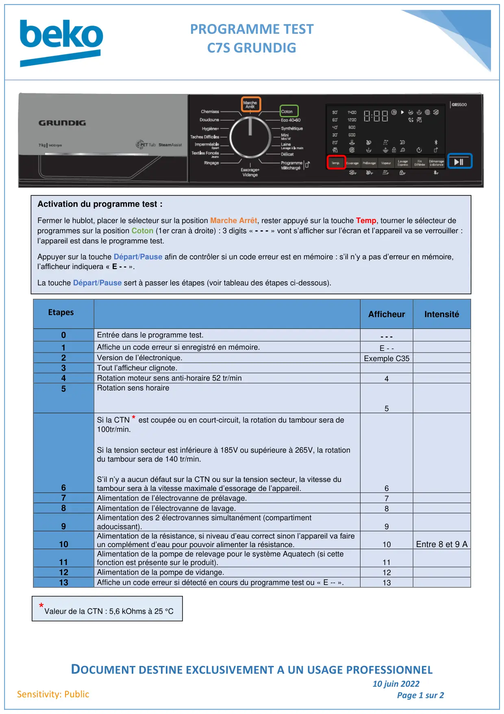
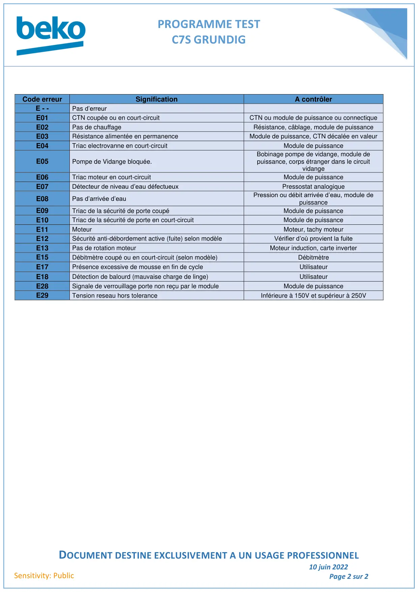

Prog Test lave linge C7S Prologue Grundig

PROGRAMME TESTC7S GRUNDIGDOCUMENT DESTINE EXCLUSIVEMENT A UN USAGE PROFESSIONNEL10 juin 2022Page 1 sur 2Sensitivity: PublicAfficheurIntensité0Entrée dans le programme test.- - -1Affiche un code erreur si enregistré en mémoire.E - -2Version de l’électronique.Exemple C353Tout l’afficheur clignote.4Rotation moteur sens anti-horaire 52 tr/min45Rotation sens horaire56Si la CTN * est coupée ou en court-circuit, la rotation du tambour sera de100tr/min.Si la tension secteur est inférieure à 185V ou supérieure à 265V, la rotationdu tambour sera de 140 tr/min.S’il n’y a aucun défaut sur la CTN ou sur la tension secteur, la vitesse dutambour sera à la vitesse maximale d’essorage de l’appareil.67Alimentation de l’électrovanne de prélavage.78Alimentation de l’électrovanne de lavage.89Alimentation des 2 électrovannes simultanément (compartimentadoucissant).910Alimentation de la résistance, si niveau d’eau correct sinon l’appareil va faireun complément d’eau pour pouvoir alimenter la résistance.10Entre 8 et 9 A11Alimentation de la pompe de relevage pour le système Aquatech (si cettefonction est présente sur le produit).1112Alimentation de la pompe de vidange.1213Affiche un code erreur si détecté en cours du programme test ou « E -- ».13Activation du programme test :Fermer le hublot, placer le sélecteur sur la position Marche Arrêt, rester appuyé sur la touche Temp, tourner le sélecteur deprogrammes sur la position Coton (1er cran à droite) : 3 digits « - - - » vont s’afficher sur l’écran et l’appareil va se verrouiller :l’appareil est dans le programme test.Appuyer sur la touche Départ/Pause afin de contrôler si un code erreur est en mémoire : s’il n’y a pas d’erreur en mémoire,l’afficheur indiquera « E - - ».La touche Départ/Pause sert à passer les étapes (voir tableau des étapes ci-dessous).Etapes*Valeur de la CTN : 5,6 kOhms à 25 °C
1 / 2
PROGRAMME TESTC7S GRUNDIGDOCUMENT DESTINE EXCLUSIVEMENT A UN USAGE PROFESSIONNEL10 juin 2022Page 2 sur 2Sensitivity: PublicCode erreurSignificationA contrôlerE - -Pas d’erreurE01CTN coupée ou en court-circuitCTN ou module de puissance ou connectiqueE02Pas de chauffageRésistance, câblage, module de puissanceE03Résistance alimentée en permanenceModule de puissance, CTN décalée en valeurE04Triac electrovanne en court-circuitModule de puissanceE05Pompe de Vidange bloquée.Bobinage pompe de vidange, module depuissance, corps étranger dans le circuitvidangeE06Triac moteur en court-circuitModule de puissanceE07Détecteur de niveau d’eau défectueuxPressostat analogiqueE08Pas d’arrivée d’eauPression ou débit arrivée d’eau, module depuissanceE09Triac de la sécurité de porte coupéModule de puissanceE10Triac de la sécurité de porte en court-circuitModule de puissanceE11MoteurMoteur, tachy moteurE12Sécurité anti-débordement active (fuite) selon modèleVérifier d’où provient la fuiteE13Pas de rotation moteurMoteur induction, carte inverterE15Débitmètre coupé ou en court-circuit (selon modèle)DébitmètreE17Présence excessive de mousse en fin de cycleUtilisateurE18Détection de balourd (mauvaise charge de linge)UtilisateurE28Signale de verrouillage porte non reçu par le moduleModule de puissanceE29Tension reseau hors toleranceInférieure à 150V et supérieur à 250V
2 / 2